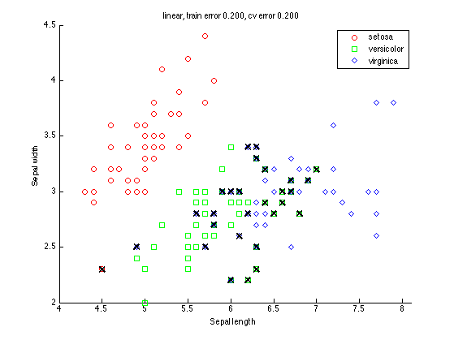
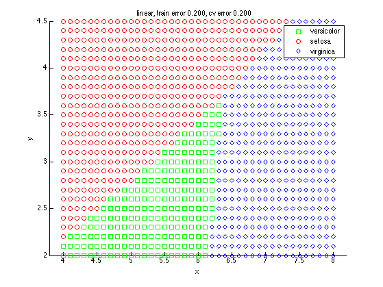
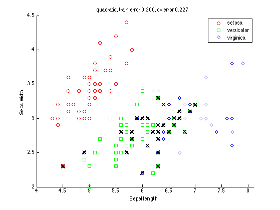
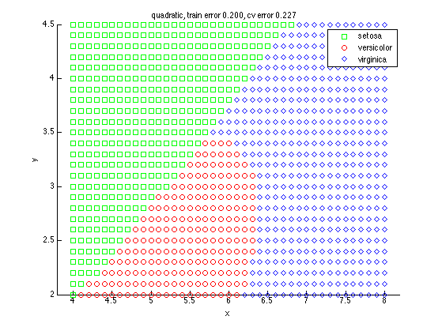

requireStatsToolbox();
load fisheriris
if 0
figure
gscatter(meas(:,1), meas(:,2), species,'rgb','osd');
xlabel('Sepal length');
ylabel('Sepal width');
end
N = size(meas,1);
s = RandStream('mt19937ar','seed',0);
RandStream.setDefaultStream(s);
types ={'linear', 'quadratic'};
for t=1:2
type = types{t};
ldaClass = classify(meas(:,1:2),meas(:,1:2),species, type);
[ldaResubCM,grpOrder] = confusionmat(species,ldaClass);
bad = ~strcmp(ldaClass,species);
ldaResubErr = sum(bad) / N
cp = cvpartition(species,'k',10);
ldaClassFun= @(xtrain,ytrain,xtest)(classify(xtest,xtrain,ytrain, type));
ldaCVErr = crossval('mcr',meas(:,1:2),species,'predfun', ...
ldaClassFun,'partition',cp)
figure;
gscatter(meas(:,1), meas(:,2), species,'rgb','osd');
xlabel('Sepal length');
ylabel('Sepal width');
hold on;
plot(meas(bad,1), meas(bad,2), 'kx', 'markersize', 10, 'linewidth', 2);
title(sprintf('%s, train error %5.3f, cv error %5.3f', type, ldaResubErr, ldaCVErr))
figure;
[x,y] = meshgrid(4:.1:8,2:.1:4.5);
x = x(:);
y = y(:);
j = classify([x y],meas(:,1:2),species, type);
gscatter(x,y,j,'grb','sod')
title(sprintf('%s, train error %5.3f, cv error %5.3f', type, ldaResubErr, ldaCVErr))
end
ldaResubErr =
0.200000000000000
ldaCVErr =
0.200000000000000
ldaResubErr =
0.200000000000000
ldaCVErr =
0.226666666666667
   